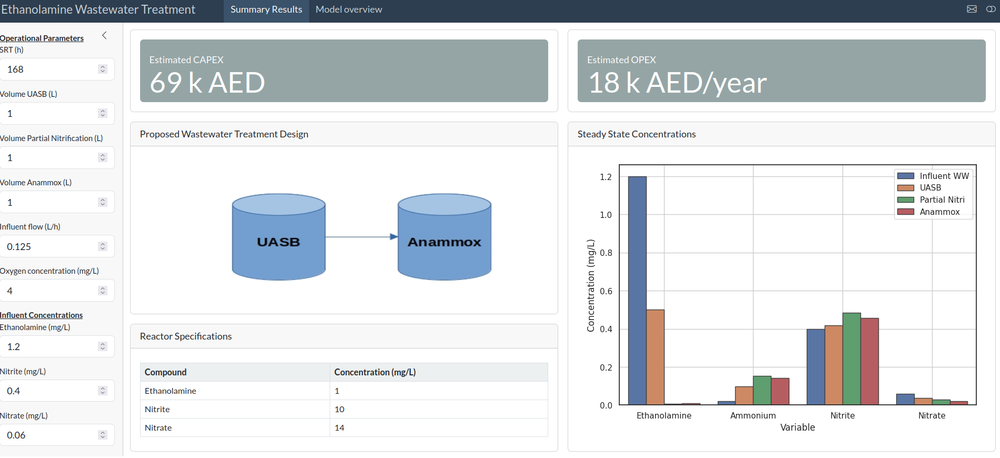

graph LR A[run_simulation.py] --> B[bioreactor_model.py] A --> C[bioreactor_cost.py] B --> D[bioreactor_parameters.py] C --> D
Summary
An online dashboard which includes a web simulator was developed to demonstrate the effectiveness of treating wastewater rich in ethanolamine. Due to the high content of nitrogen in comparison to carbon, the degradation of ethanolamine is not straightforward and required an approach that involves a series of steps to ensure that the effluent does not contain significant concentrations of ethanolamine nor ammonium.
The dashboard shows the effluent from each unit proposed in the treatment train, and also includes an estimation of the capital and operational expenses that would be incurred for treating such wastewater.
Introduction
Mathematical models are useful tools to predict the performance of bioreactors. In fact, several companies (Biowin, GPS-X) offer software products that include simulatiors for wastewater treatment plants.
These softwares however, are usually tailored for the treatment of municipal wastewater and oftentimes are not suitable for the treatment of industrial wastewaters, which usually contain specific compounds not present in a traditional wastewater (e.g. ethanolamine, furfurals, heavy metals).
Ethanolamine is an organic chemical compound commonly used in personal care and cleaning products as a surfactant and emulsifying ingredient. Its chemical composition presents a 2:1 ratio Carbon:Nitrogen, which makes it somehow difficult to treat in a single unit (e.g. an anerobic digester). A train unit of a series of bioreactors needs to be designed in order to consume all the organic matter and also futher treatment is required for further reduction of the nitrogen compounds (mainly nitrate). Industrial wastewaters rich in ethanolamine

Environmental Impact: If not properly treated, wastewater containing ethanolamine can have a detrimental impact on the environment. It can lead to pollution of rivers or seas and pose a threat to the health of ecosystems and people4.
Dashboard description
This dashboard is a demonstration tool on how a train unit consisting of a UASB (Upflow Anaerobic Slugde Blanket) together with a partial nitrification/anammox system would work to remove ethanolamine from the wastewater. The dashboard includes also an estimation of the potential costs that would be incurred for treating such wastewater following the design proposed.
The adjustable parameters to evaluate the treatment proposed are as follows:
Operational Parameters
- Volumes of the reactors (in L):
- UASB
- Partial nitrification
- Anammox
- Solids Retention Time (SRT) (in d-1)
- Concentration of oxygen of the partial nitrification reactor (in mg/L)
Influent concentrations:
- Ethanolamine
- Ammonium
- Nitrite
- Nitrate
- Inorganic carbon
The user can define on the left handside the values for each one of the parameters defined and the model will run a simulation to reach steady state. The figure will then plot the concentrations in the influent and in the effluent of each unit proposed in the treatment train.
Technical features
This code was developed in Python and the dashboard was created using Shiny for Python.
Firstly, the code containing the bioreactor model is wrote in a modular way and can be executed by runnung the run_simulation.py file.
The code is then executed using this workflow
The online simulation tool is available in this website. An snapshot of the model simulator is shown in Figure 1.

The main figure shows the concentrations of the compounds of interest in steady state in the effluent of each one of the bioreactor units considered (e.g. UASB, Partial nitrification and anammox).
An estimation of the capital expenditure based on the volumes of each reactor unit is provided, together with an estimation of the operational expenses based on the size of each bioreactor and the oxygen requirements for the partial nitrification reactor.
Further improvements
Further improvements to this dashboard include (but not limited to):
- Calculate volumes based on discharge limits in steady state.
- Include dynamic concentrations results for each bioreactor.
- Refine economic calculations (CAPEX and OPEX).